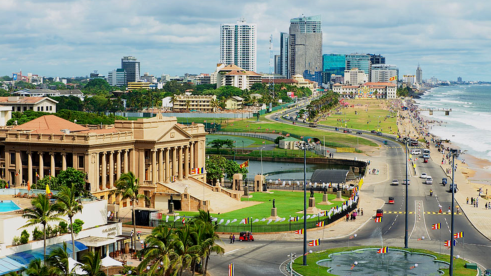

Sri Lanka, formerly Ceylon, is an island country lying in the Indian Ocean and separated from peninsular India by the Palk Strait. Sri Lanka's history, culture, and natural beauty are undeniably alluring. The island's endless beaches, timeless ruins, welcoming people, oodles of elephants, rolling surf, cheap prices, fun trains, famous tea, and flavourful food make Sri Lanka irresistible.
Few places have as many Unesco World Heritage Sites (eight) packed into such a small area. Sri Lanka's 2000-plus years of culture can be discovered at ancient sites where legendary temples boast beautiful details even as they shelter in caves or perch on prominent peaks. Enjoy the highly recommended Safari tours of Sri Lanka’s pleasantly relaxed national parks encounter leopards, water buffaloes, all manner of birds and a passel of primates. Discover a favourite beach, meditate in a 2000-year-old temple, exchange smiles while strolling a mellow village, try to keep count of the little dishes that come with your rice and curry, then hit some epic surf.